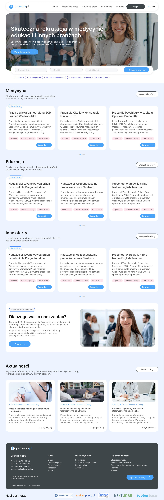
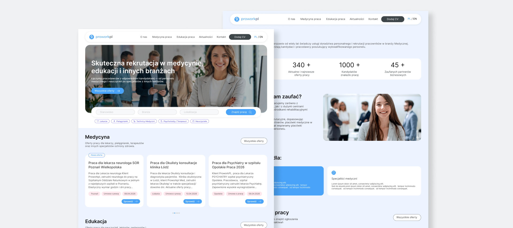
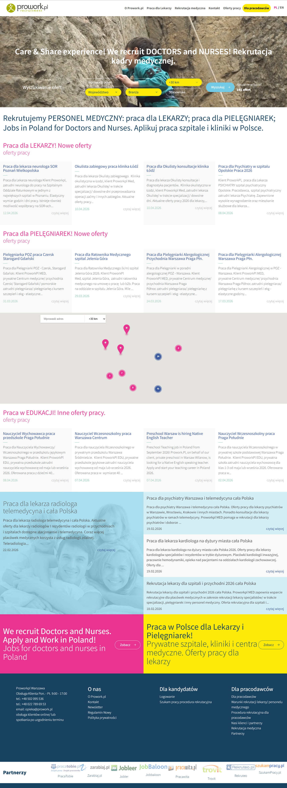
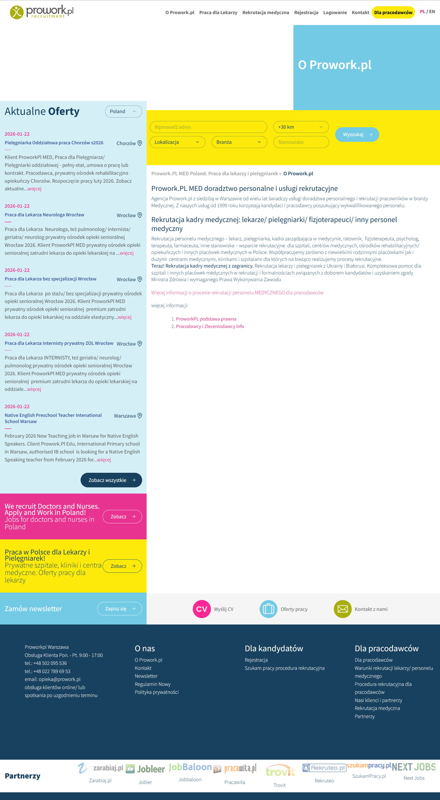
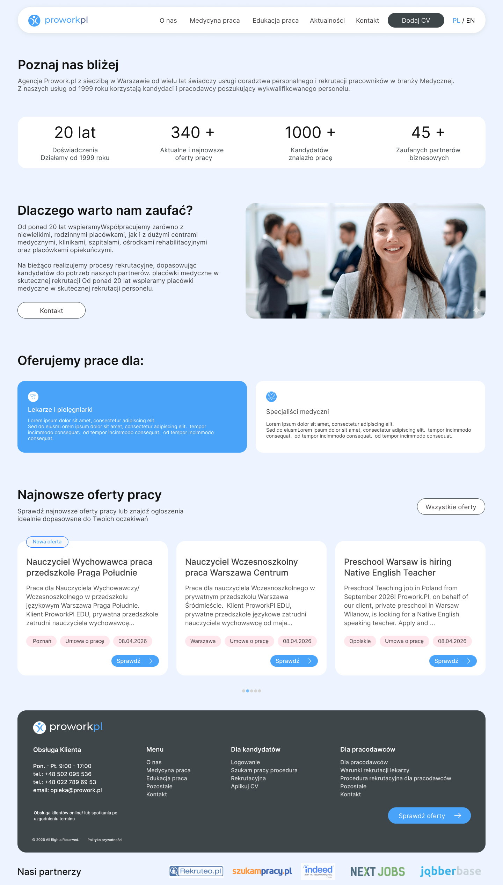
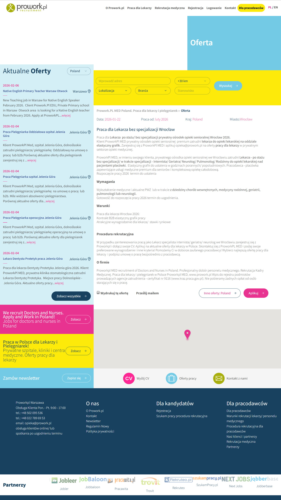
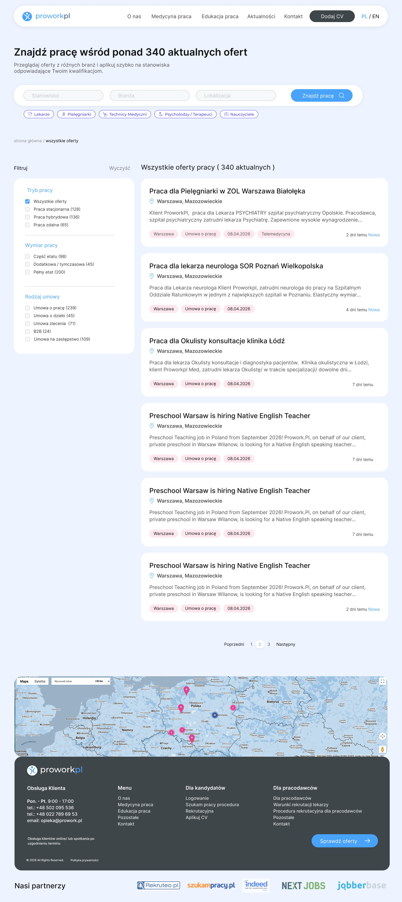
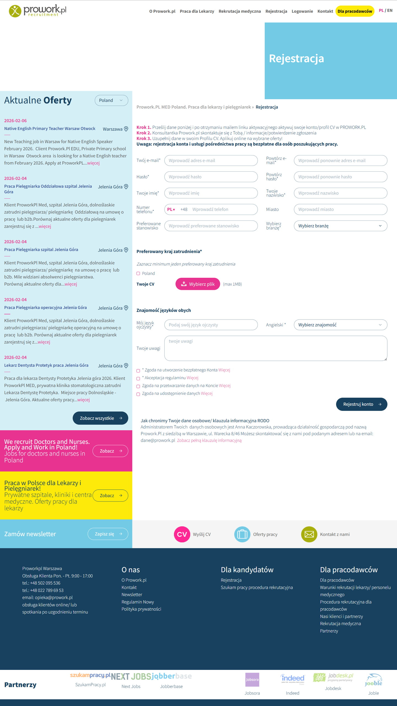
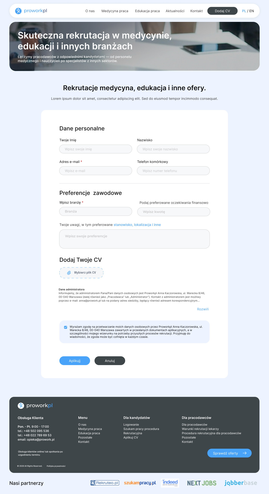
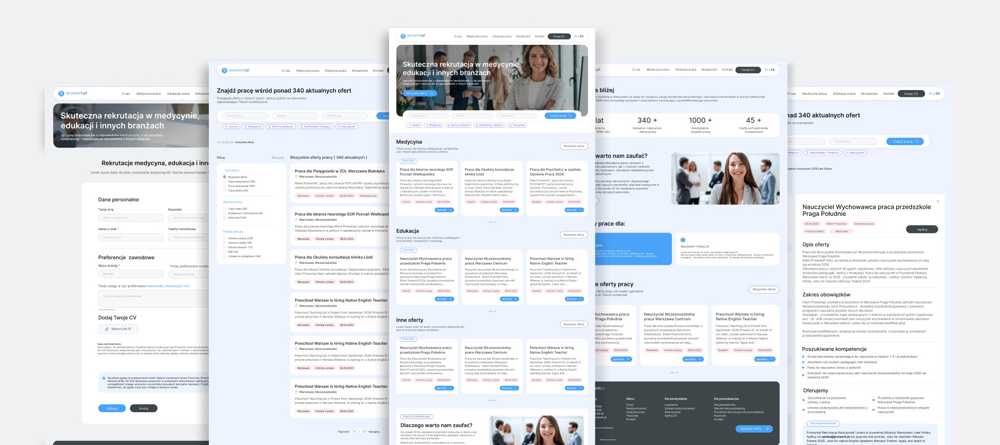

Prowork
UX/UI Designer — Logo, UX audit, information architecture & redesign
Hover the preview to scroll the full homepage →



A quick glance of the homepage and the new header from Prowork redesign.
Overview
Prowork is a small Warsaw recruitment agency that has been placing medical staff since 1999 — doctors, nurses, therapists and technicians — and, over the last few years, teachers as well. Their clients range from single family clinics to hospitals, care centres and private schools.
The website had grown by accretion for two decades. The offer lived in walls of text, the entire education side of the business was almost invisible, and the brand looked nothing like an agency with that much history behind it. The brief was a complete rebuild: a new logo, an architecture a candidate can actually understand, and a redesign end to end. I ran the UX analysis and designed everything — brand, structure and every screen — in Figma.
The problem
Two businesses were sharing one website, and only one of them was visible. Everything else followed from that.
- Half the business hidden. Every headline said doctors and nurses. Teaching roles existed, but sat under a generic “Praca w EDUKACJI! Inne oferty pracy” heading with no route from the menu.
- A menu that changed between pages. Seven items on one page, six on another, with “Rejestracja”, “Logowanie” and “Dla pracodawców” competing for the same attention as the offer itself.
- Offers as printed pages. A job was a block of paragraphs with a date and a “print this offer” link — no filters, no tags, nothing scannable across hundreds of listings.
- Colour used as decoration. Magenta, yellow and cyan panels all shouted at once, so nothing actually led. A stock photo of a child climbing a rock face opened a medical recruitment site.
- A dated identity. The old logo and its “recruitment” lockup read as a small 2010 web shop and quietly undersold twenty years of credibility.
- Applying was the hardest part. Fifteen fields, a repeated e-mail and password, four separate consent boxes and a 1 MB cap on the CV — asked before the candidate had been given a single reason to trust the agency.
The same pages, rethought
Four places where the gap was widest — the old site on the left, the redesign on the right. Click any pair to compare them full-size.







Two very different visitors
Every decision traced back to one of these two people. One is looking for work, the other is looking for staff — and the old site made them share a single, undifferentiated path.
The candidate
A nurse, doctor or teacher looking for their next contract.
- Scans for location, contract type and hours before anything else
- Checks two or three agencies before committing to one
- Wants to send a CV once, without creating an account first
The employer
A clinic, care centre or private school that needs staff.
- Needs to see the agency covers their speciality, not a vague promise
- Cares about the register entry, the process and how candidates are vetted
- Comes back repeatedly, so a clear structure saves real time
Design process
I audited the old site page by page, then rebuilt the project around a single question a candidate asks on arrival: is there work here for someone like me? Everything that didn't help answer it was cut.
- Audit & research A heuristic review of every template on the old site, plus a scan of how larger job boards structure listings, filters and offer cards.
- Brand A new logo — the mark redrawn and the “recruitment” lockup dropped — so the name holds up small, in a header and next to a client's own branding.
- Information architecture Seven inconsistent menu items reduced to five, with medicine and education finally named as separate branches and one primary action carried across the site.
- Content system One offer card and one list template, so hundreds of live listings stay scannable and the team can keep adding them.
- UI in Figma Wireframes through to high-fidelity screens: a single blue accent doing all the signalling, generous white space, and forms cut back to the fields that matter.

The final approved designs — homepage, the offers list, the apply form, the about page and an offer detail, in one view.
From a shifting menu to two named branches
- O Prowork.pl
- Praca dla Lekarzy
- Rekrutacja medyczna
- Rejestracja
- Logowanie
- Kontakt
- Dla pracodawców
- O nas
- Medycyna praca — its own branch
- Edukacja praca — out of “inne”, into the menu
- Aktualności
- Kontakt
- Dodaj CV — one action, on every page
Pick the branch
Medicine or education, named in the menu instead of buried under “other”.
Filter to the right offer
Work mode, hours and contract type narrow hundreds of listings to a handful.
Send the CV once
One short form — no account, no repeated password, no wall of consents.
Solution & results
The redesign gives a twenty-year-old agency a front door that matches it. Both sides of the business are named in the navigation instead of one hiding behind the other, offers can finally be filtered and compared, sending a CV takes one short form, and the new logo holds the whole thing together. The structure is built to grow: every new branch, offer or guide drops into a template that already exists.
The redesign at a glance — measured by design decisions, not vanity metrics.
Read more of my case studies

👋 Get in touch at
julidovha05@gmail.com